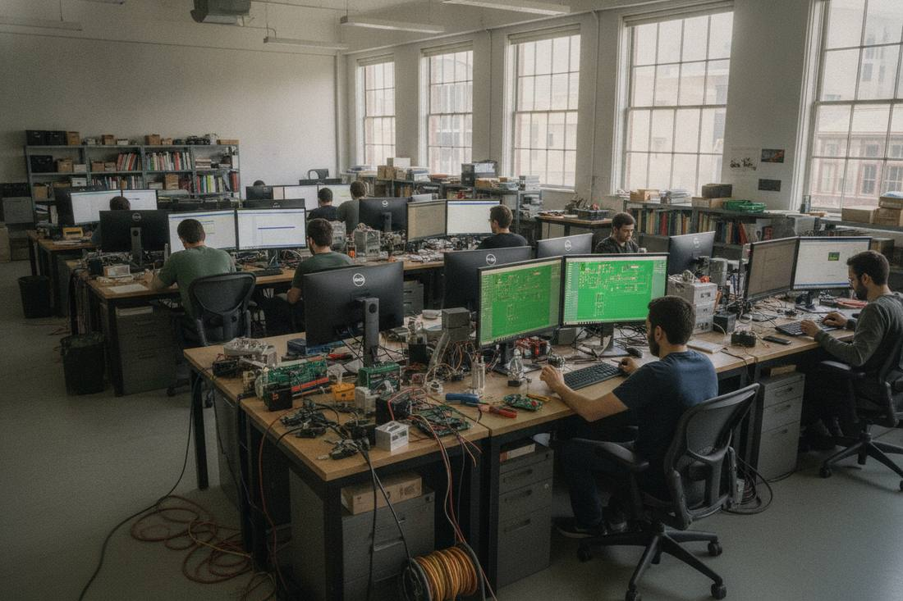

A $130 Million Seed Round Betting on a Hardware Design Model
On October 29, The Information reported that Dulo, co-founded by Google self-driving pioneer Sebastian Thrun, had closed a $130 million seed round, building a foundation model for hardware design, with investors including Eric Schmidt, John Doerr and Kleiner Perkins.

- 01THE REPORT — On October 29, The Information reported that Dulo had closed its seed round.
- 02THE FOUNDER — Co-founded by Thrun; the team comes from Waymo and Google Brain.
- 03THE MODEL — A foundation model for hardware design: parameters in, workable designs out.
WHAT HAPPENEDWhat Happened
On October 29, The Information reported that Dulo, co-founded by Sebastian Thrun, had closed a $130 million seed round. Thrun is a computer scientist from Google's self-driving project. Dulo was founded in San Francisco this year, with a team from Waymo, Google Brain and the Stanford Artificial Intelligence Laboratory.
Dulo's direction is a foundation model for hardware design: feed in parameters and let the model produce workable aircraft or car designs, leaving manufacturing to other companies. The company's stated goal is to make manufacturing reach the speed of light. No public details on product, customers or timeline are available yet.
Beyond Schmidt and Doerr, the investor list includes DST Global, Construct Capital and Lowercarbon Capital. By Dealroom's reckoning, the seed round ranks in the top 1% of US robotics seed rounds by size in history.
FROM BUILD TO DESIGNPhysical AI Money Is Moving From Building Robots to Drawing Them
Foundry raised money to build factories; Dulo raised money to draw designs. In the same week, both ends of physical AI received large checks.
If the design step is eaten by models, engineers' work shifts from drawing to setting parameters, reviewing proposals and taking responsibility.
A SEED THAT ARGUESThe Size of a Seed Round Is Itself an Argument
A $130 million seed round is uncommon. Investors are betting on a judgment: hardware design deserves a foundation model.
Delivering on that judgment requires very specific evidence: whether the designs the model draws can pass engineering validation and make it onto real production lines.
REPORTED, NOT ANNOUNCEDReported Numbers, Not Yet a Company Announcement
This financing comes from The Information's reporting, with the original behind a paywall. The company has issued no official announcement, and neither the valuation nor the lead investor has been disclosed.
Every number written into the main text must carry its reported status. Writing a rumor as an official announcement is the easiest mistake to make in this piece.
THE SHIFTWhat Changed
SIGNAL JUDGMENT — ANALYSISThe Bigger the Seed Round, the More Carefully the Validation Bill Must Be Read
Tokenta Signal's judgment is unchanged: whether a hardware design model is worth a $130 million seed round depends on whether the first blueprint it draws can pass engineering validation.
WHAT REMAINS UNCERTAINWhat Remains Uncertain
EVIDENCEEvidence
Key points confirmed from the original report: on October 29, The Information reported that Dulo had closed a $130 million seed round; co-founded by Thrun, it is building a foundation model for hardware design; investors include Schmidt, Doerr, Kleiner Perkins, DST Global, Construct Capital and Lowercarbon Capital; product and customer details were not disclosed.
PRIMARY SOURCESPrimary Sources
- Dealroom: Waymo pioneer Thrun's hardware-design startup Dulo raises $130M seed
https://dealroom.co/news/168108-waymo-pioneer-thruns-hardware-design-startup-dulo-raises-130m-seed/ - FourWeekMBA: Waymo Pioneer Thrun's Dulo Raises $130M Seed for Hardware AI
https://fourweekmba.com/ai-waymo-pioneer-thruns-dulo-raises-130m-seed-for-hardware-ai/
RELATEDRelated Intelligence
- Pliant Raises $80 Million to Open Its B2B Payment Rails to AI Agents
- Meta's Debut Euro Bond Draws Record 53 Billion Euros in Orders, Nearly Six Times the Amount Sought (Update to Flash 193)
- OpenAI Buys Pierre Computer and Folds Git Storage Into Codex, Taking Aim at GitHub
- NiCE AI Revenue Jumps 46% to $392 Million as Q3 Beats Estimates and Workforce Is Cut 5%